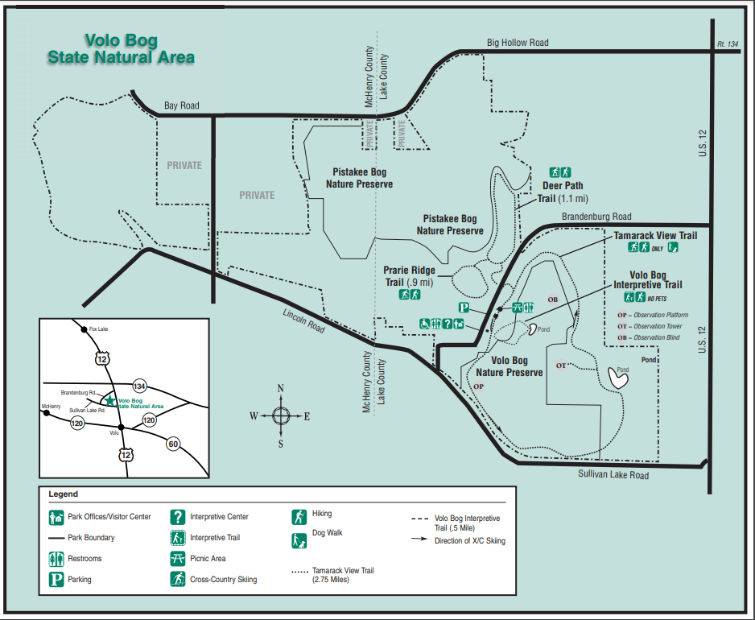
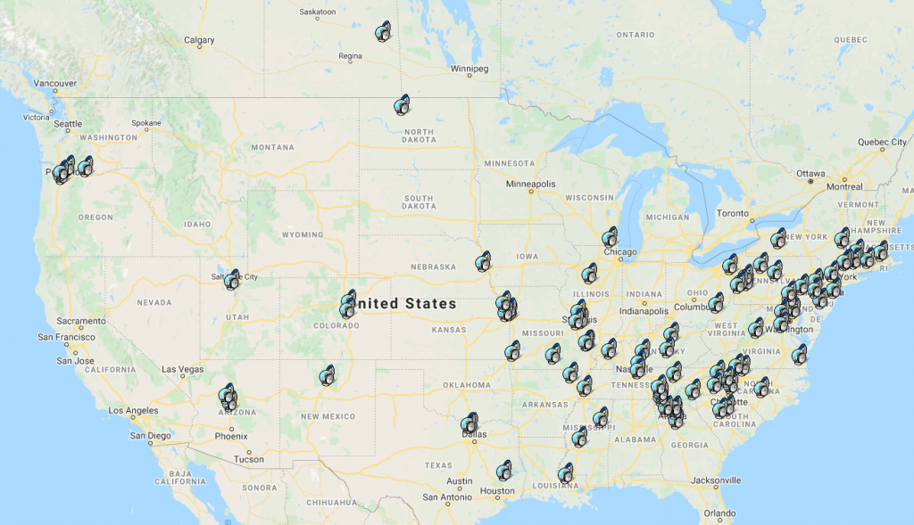

First Parks on the Air Activation - K-4160, Volo Bog
I mentioned in my Field Day post from a few weeks ago that I was hoping to get out to a Parks on the Air activation soon, and this past Saturday, I made it happen!
Parks on the Air is an international program inspired by the ARRL's 2016 National Parks on the Air event. While that program ended at the beginning of 2017, a group of invested amateurs set about booting up an independent, ongoing program in the style of Summits on the Air, Islands on the Air, World Wide Flora and Fauna, etc. The program engages two (overlapping) sets of radio operators: 'Activators' who set up portable, temporary operations in state and national parks and wildlands, and 'Hunters' who seek them out on the air from more permanent setups. Of course, you can make 'park to park' contacts and be a hunter and an activator at the same time.

The draw of this for me is, as I alluded to in the Field Day post - I love the energy of being in the middle of a pile-up. Even if these contacts have a more lighthearted and friendly feel than a rapid fire contest, being a desirable contact on the air is a really jam.
After attending the South Milwaukee Amateur Radio Club's swapmeet in the morning, I headed back south to Volo Bog State Natural Area, a wilderness preserve in Northern Illinois.
The park surrounds a large natural mashland, with many miles of a loop hiking path, scenic overlooks and, importantly for radio operations, a picnic area. I did some scouting on Google Maps ahead of time, and guessed that the picnic tables would be far enough apart that I could find a quiet corner to operate in.

And indeed, apart from a few hikers and what looked like a field-trip just departing, the park was pretty quiet. I found a nice picnic table in the shade next to the marsh to set myself up.
My setup for the day was somewhat more powerful than my Field day setup, including:
- A Yaesu FT-891 running ~70W SSB on 20m and 15m, with the included microphone.
- A Wolf River Coils TIA Mini-Mega antenna - in retrospect, I didn't need to install the base-loading coil, since the 17' whip is full size on 15m and 20m.
- No tuner, but I did bring my Autek RF-1 to make sure the antenna was adjusted correctly for each band.
- A Bioenno 12v, 12Ah LiFePO battery.
- A little powerpole Power Analyzer to track power usage from the battery
- My classic Hamkey iambic paddle on its little plastic base
- A paper logbook
Oh what fun was had! I made 98 QSOs in roughly two hours of operating - all but 4 of which were on 20m, the last few on 15m. The bands were all over the place. I had wild swings of propagation into the eastern seaboard and the Southeast; at one point, I had five consecutive contacts from the same corner of Northwest Georgia. But I also reached some ears out in the Southwest, and even a handful of stations out in Oregon and Washington. I also made 8 (I believe) Park to Park contacts with other operators out the in wild.

All in all, a tremendous day of fun and excitement, and I'm looking forward to getting back on the air in a park soon.
73